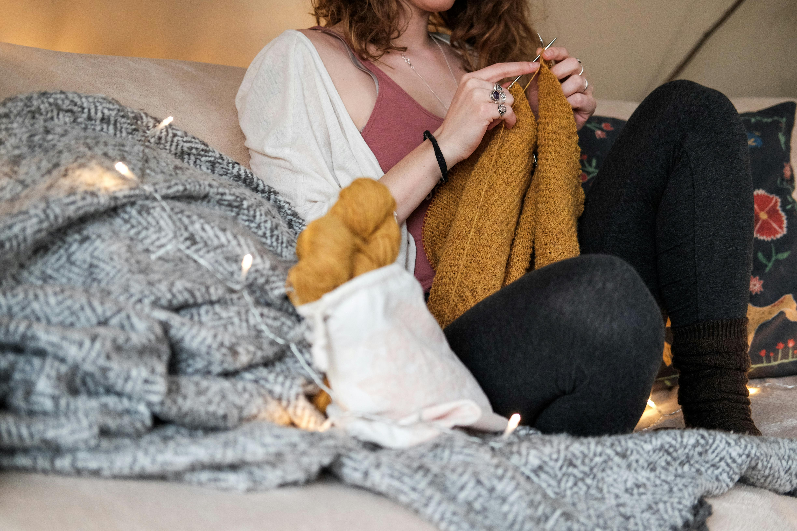
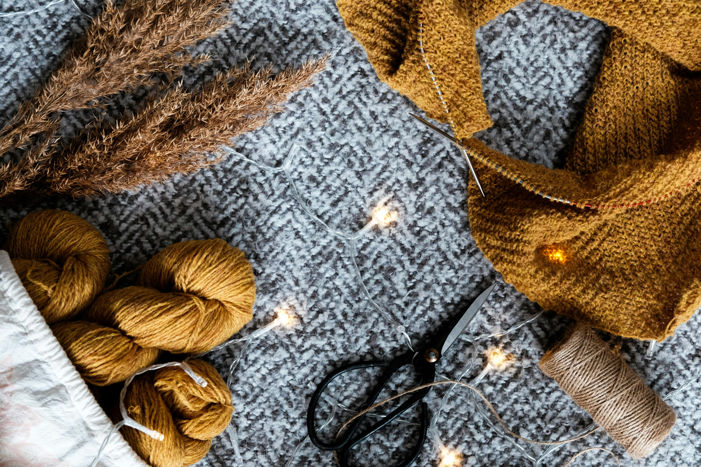

В'язання шпицями
В'язання шпицями - це давня рукодільна техніка, яка зберігає свою популярність завдяки своїй красі,
творчій свободі та можливостям для самовираження.
Основні види в'язання шпицями:
Просте в'язання: Це найбільш базовий і поширений вид в'язання шпицями, який
використовується для
створення шарфів, светрів, шапок та інших зручних та комфортних виробів.
В'язання за схемою: Ця техніка в'язання передбачає використання схем та візерунків для
створення
складних та красивих виробів. Вона надає більше можливостей для творчості та експериментів з
різними текстурами та дизайнами.
Кабельне в'язання: Це вид в'язання, де використовуються спеціальні петлі, які дозволяють
створювати вигнуті та текстурні елементи у виробах. Кабельне в'язання додає виробам складність
та красу, і часто використовується для створення кардиганів, светрів та пальто.
Кругове в'язання: Ця техніка дозволяє вам в'язати без швів, створюючи кругові або трубчасті
вироби, такі як капелюхи, рукавички та носки. Вона зручна та швидка, і може бути використана для
створення великих проектів без потреби у зшиванні деталей.
Незалежно від вашого досвіду в'язання, вивчення цих технік допоможе вам створювати прекрасні та
унікальні вироби шпицями. І не забувайте експериментувати

